Chapter 10: Refining Your App¶
While you’ve been toiling on making your app functional, your designer has been busy coming up with a stunning eye-catching design. One of the strengths of SwiftUI is that, as long as you’ve been encapsulating views and separating them out along the way, it’s easy to restyle the UI without upsetting the main functionality.
In this chapter, you’ll style some of the views for iPhone, making sure that they work on all iPhone devices. The designer has moved your elements around and created a new modal screen for the timer. Essentially, the app works in the same way, though.

Creating individual reusable elements is a good place to start. Looking at the design, you’ll have to style:
- A raised button for Get Started, Start Exercise and Done.
- An embossed button for History and the exercise rating. The History button is a capsule shape, while the rating is round.
- An inset view background for the timer.
The starter app contains the colors and images that you’ll need in the asset catalog. There’s also some code for creating the welcome image and text in WelcomeImages.swift.
Neumorphism¶
Skills you’ll learn in this section: neumorphism.
This style of design, where the background and controls are one single color, is called neumorphism. It’s a recent trend in design, and you achieve the look with shading rather than with colors.
In the old days, peak iPhone design had skeuomorphic interfaces with realistic surfaces, so you had wood and fabric textures with dials that looked real throughout your UI. iOS 7 went in the opposite direction with minimalistic flat design. The name Neumorphism comes from New + Skeuomorphism and refers to minimalism combined with realistic shadows.
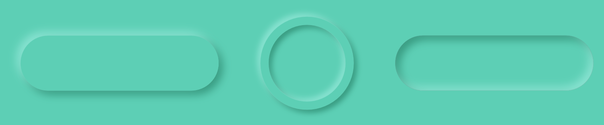
Essentially, you choose a theme color. You then choose a lighter tint and a darker shade of that theme color for the highlight and shadow. You can define colors with red, green, blue (RGB) or hue, saturation and lightness (HSL). When shifting tones within one color, HSL is the easier model to use as you keep the same hue. The base color in the picture above is Hue: 166, Saturation: 54, Lightness: 59. The lighter highlight color has the same Hue and Saturation, but a Lightness: 71. Similarly, the darker shadow color has a Lightness: 30.
Creating a neumorphic button¶
The first button you’ll create is the Get Started raised button.
➤ Create a new SwiftUI View file called RaisedButton.swift.
Replace the two structures with:
struct RaisedButton: View {
var body: some View {
Button(action: {}, label: {
Text("Get Started")
})
}
}
struct RaisedButton_Previews: PreviewProvider {
static var previews: some View {
ZStack {
RaisedButton()
.padding(20)
}
.background(Color("background"))
.previewLayout(.sizeThatFits)
}
}
Here you create a plain vanilla button with a preview sized to fit the button. Assets.xcassets holds the background color “background”.
The text style on all three raised buttons is the same.
➤ Add this code after RaisedButton:
extension Text {
func raisedButtonTextStyle() -> some View {
self
.font(.body)
.fontWeight(.bold)
}
}
Here you style the text with a bold font.
➤ In RaisedButton, add the new modifier to Text("Get Started"):
.raisedButtonTextStyle()
Abstracting the style into a modifier makes your app more robust. If you want to change the text style of the buttons, simply change raisedButtonTextStyle() and the changes will reflect wherever you used this style.
Styles¶
Skills you’ll learn in this section: view styles; button style; shadows.
Apple knows that you often want to style objects, so it created a range of style protocols for you to customize. You’ll find the list at https://apple.co/3kzvD2e.
Styling text is not on that list, which is why you created your own view modifier.
You’ve already used one of these styles, the built-in PageTabViewStyle, on your TabView. In the documentation, it appears that there are a number of button styles available, however most of these apply to specific operating systems. For example you can only use BorderedButtonStyle on macOS, tvOS and watchOS.
You can customize buttons by setting up a structure that conforms to ButtonStyle.
➤ Add this new structure to RaisedButton.swift:
struct RaisedButtonStyle: ButtonStyle {
func makeBody(configuration: Configuration) -> some View {
configuration.label
.background(Color.red)
}
}
Here you make a simple style giving the button text a red background. ButtonStyle has one required method: makeBody(configuration:). The configuration gives you the button’s label text and a Boolean isPressed telling you whether the button is currently depressed.
Swift Tip: If you want to customize how the button action triggers with gestures, you can use PrimitiveButtonStyle instead of ButtonStyle.
You can use this button style to change all your buttons in a view hierarchy.
➤ Open HIITFitApp.swift and temporarily add this new modifier to ContentView():
.buttonStyle(RaisedButtonStyle())
You tell ContentView that whenever there’s a button in the hierarchy, it should use your custom style.
➤ Build and run.
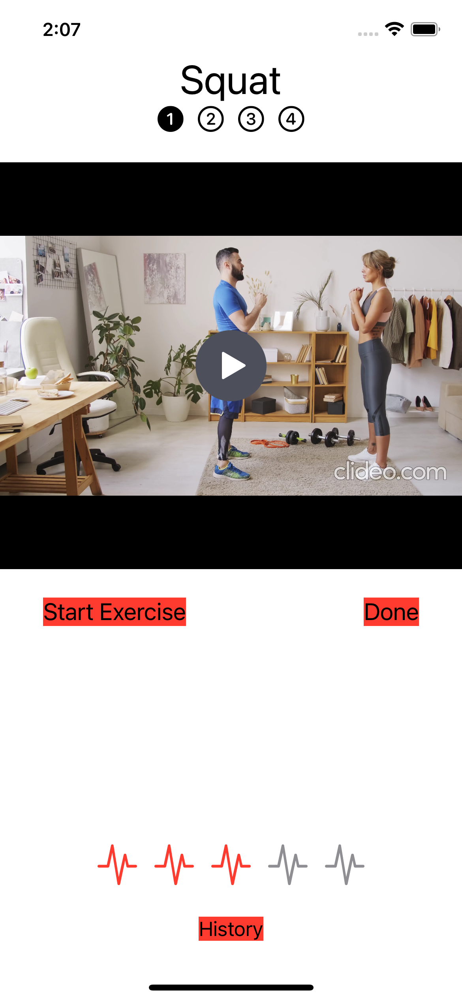
All the buttons in your app will use your new style with the red background. Notice that when you use a style, the button text color changes from the default accent color of blue to the primary color. That’s black in Light Mode and white in Dark Mode.
➤ The buttons in your app won’t all use the same style so remove buttonStyle(RaisedButtonStyle()) from HIITFitApp.
➤ Open RaisedButton.swift and in RaisedButton_Previews add a new modifier to RaisedButton() :
.buttonStyle(RaisedButtonStyle())
You can now preview your button style as you change it.
➤ In RaisedButtonStyle, change makeBody(configuration:) to:
func makeBody(configuration: Configuration) -> some View {
configuration.label
.frame(maxWidth: .infinity)
.padding([.top, .bottom], 12)
.background(
Capsule()
)
}
When you set frame(maxWidth:) to .infinity, you ask the view to take up as much of the width as its parent gives it. Add some padding around the label text at top and bottom. For the background, use a Capsule shape.
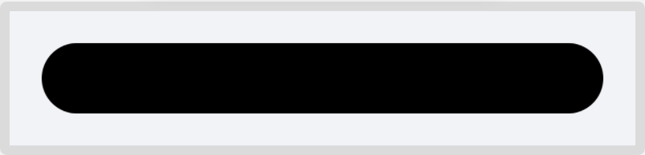
When you use Shapes, such as Rectangle, Circle and Capsule, the default fill color is black, so you’ll change that in your neumorphic style to match the background color.
Shadows¶
You have two choices when adding shadows. You can choose a simple all round shadow, with a radius. The radius is how many pixels to blur out to. A default shadow with radius of zero places a faint gray line around the object, which can be attractive.
The other alternative is to specify the color, the amount of blur radius, and the offset of the shadow from the center.
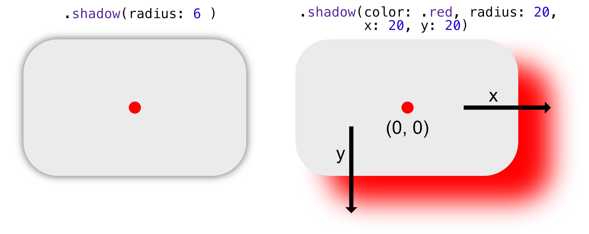
➤ In makeBody(configuration:), add new modifiers to Capsule():
.foregroundColor(Color("background"))
.shadow(color: Color("drop-shadow"), radius: 4, x: 6, y: 6)
.shadow(color: Color("drop-highlight"), radius: 4, x: -6, y: -6)
Watch the button preview change as you add these modifiers. Your darker shadow is offset by six pixels to the right and down, whereas the highlight is offset by six pixels to the left and up. When you add the highlight, the button really pops off the screen.
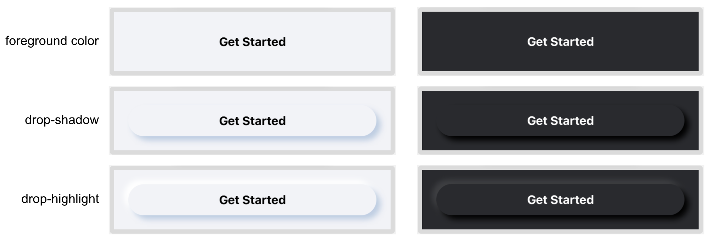
The buttons work in Dark Mode too, because each color in the asset catalog has a value for both Light Mode and Dark Mode. You’ll learn more about the asset catalog in Chapter 16, “Adding Assets to Your App”.
Abstracting your button¶
Skills you’ll learn in this section: passing closures to views.
Your button is finished, so you can now replace your three buttons in your app with this one.
➤ Open WelcomeView.swift and locate the button code for Get Started. Replace the button code and all the button modifiers with:
Button(action: { selectedTab = 0 }) {
Text("Get Started")
.raisedButtonTextStyle()
}
.buttonStyle(RaisedButtonStyle())
.padding()
Here you use your new text and button styles to create your new button.
➤ Preview the button and, even though you haven’t yet changed the background color, it looks great.
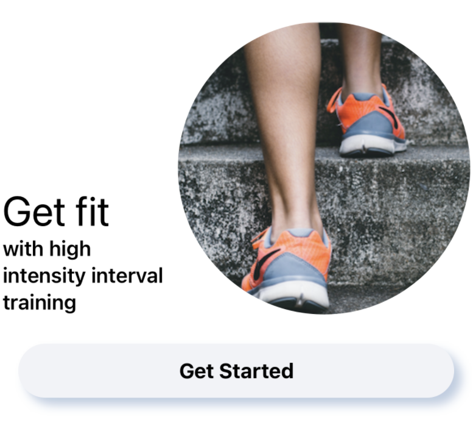
You could change your other two buttons in the same way, or you could make RaisedButton more abstract by passing in text and an action. You became familiar with closures in the previous chapter, and here’s another way you might use one.
➤ Open RaisedButton.swift and change RaisedButton to:
struct RaisedButton: View {
let buttonText: String
let action: () -> Void
var body: some View {
Button(action: {
action()
}, label: {
Text(buttonText)
.raisedButtonTextStyle()
})
.buttonStyle(RaisedButtonStyle())
}
}
You pass in the button text and an action closure. The action closure of type () -> Void takes no parameters and returns nothing. Inside Button’s action closure, you perform action().
➤ In the preview where you have a compile error, change RaisedButton() to:
RaisedButton(
buttonText: "Get Started",
action: {
print("Hello World")
})
When the user taps the button marked Get Started, your app prints Hello World in the console. (Of course a preview doesn’t print anything, so nothing will show.)
When a closure is the method’s last parameter, the preferred way of calling it is to use special trailing closure syntax.
➤ Replace the above code with:
RaisedButton(buttonText: "Get Started") {
print("Hello World")
}
With trailing closure syntax, you remove the action label and take the closure out of the method’s calling brackets.
Open WelcomeView.swift and create a new property for the Get Started button:
var getStartedButton: some View {
RaisedButton(buttonText: "Get Started") {
selectedTab = 0
}
.padding()
}
➤ In body, change your previous Get Started button code, including modifiers, to:
getStartedButton
That code is a lot more succinct but still descriptive and has the same functionality as before.
➤ Open ExerciseView.swift and create a new property for the Start Exercise button:
var startExerciseButton: some View {
RaisedButton(buttonText: "Start Exercise") {
showTimer.toggle()
}
}
➤ In body, replace the Start Exercise button code with:
startExerciseButton
You’ll move the Done button out of the view shortly.
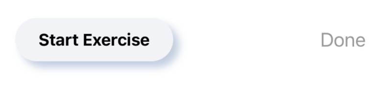
The embossed button¶
Skills you’ll learn in this section: stroking a shape.
The History button will have an embossed border in the shape of a capsule. This will be very similar to RaisedButton, except that your embossed button will be able to contain any content, not just text. For this reason, you’ll only create a new button style, and not a new button structure.
➤ Create a new SwiftUI View file named EmbossedButton.swift.
➤ Remove EmbossedButton entirely as you won’t be needing it.
➤ Copy RaisedButtonStyle from RaisedButton.swift to EmbossedButton.swift, and change the copied RaisedButtonStyle to EmbossedButtonStyle.
➤ Replace previews in EmbossedButton_Previews with:
static var previews: some View {
Button(
action: {},
label: {
Text("History")
.fontWeight(.bold)
})
.buttonStyle(EmbossedButtonStyle())
.padding(40)
.previewLayout(.sizeThatFits)
}
You show a History button using the embossed button style.
➤ Add a Dark Mode preview.
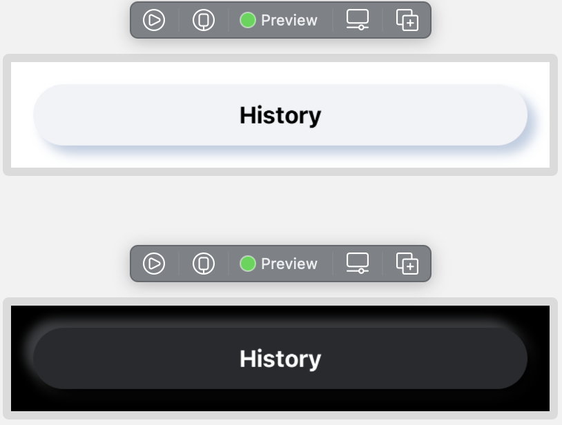
➤ In EmbossedButtonStyle, replace makeBody(configuration:) with:
func makeBody(configuration: Configuration) -> some View {
let shadow = Color("drop-shadow")
let highlight = Color("drop-highlight")
return configuration.label
.padding(10)
.background(
Capsule()
.stroke(Color("background"), lineWidth: 2)
.foregroundColor(Color("background"))
.shadow(color: shadow, radius: 1, x: 2, y: 2)
.shadow(color: highlight, radius: 1, x: -2, y: -2)
.offset(x: -1, y: -1)
)
}
Here you use stroke(_:linewidth:) to outline the capsule instead of filling it with color. You’ll learn more about shapes and fills in Chapter 18, “Paths & Custom Shapes”. You offset the capsule outline by half the width of the stroke, which centers the content.
➤ Preview your button:
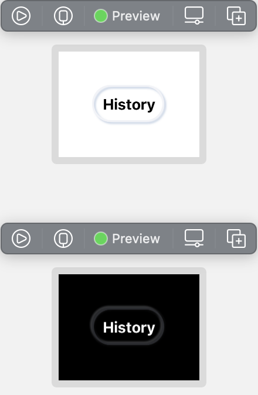
The padding doesn’t look enough for the text, but different content may require minimal padding, so you’ll add the padding to the content you provide for the button instead of inside the button style.
Your capsule-shaped button is now ready for use in your app. However, looking back at the design at the beginning of the chapter, the designer has placed the ratings in a circular embossed button. You can make your button more useful by allowing different shapes.
➤ Add a new enumeration to EmbossedButton.swift:
enum EmbossedButtonShape {
case round, capsule
}
➤ In EmbossedButtonStyle, below makeBody(configuration:), add a new method:
func shape() -> some View {
Capsule()
}
Here, you will determine the shape depending on a passed-in parameter.
➤ In makeBody(configuration:), replace Capsule() with:
shape()
You get a compile error, as stroke(_:lineWidth:) is only allowed on actual shapes such as Rectangle or Capsule, not on some View. Place your cursor on .stroke(Color("background"), lineWidth: 2), and press Option-Command-] repeatedly to move the line down to below Capsule() in shape(). The compile error will then go away.
➤ Add a new property to EmbossedButtonStyle:
var buttonShape = EmbossedButtonShape.capsule
If you don’t provide a shape, the embossed button will be a capsule.
➤ Change shape() to:
func shape() -> some View {
switch buttonShape {
case .round:
Circle()
.stroke(Color("background"), lineWidth: 2)
case .capsule:
Capsule()
.stroke(Color("background"), lineWidth: 2)
}
}
Here you return the desired shape. Unfortunately, you get a compile error. You’ll look at this problem in more depth in Section 2, but for now, you just need to understand that the compiler expects some View to be one type of view. You’re returning either a Circle or a Capsule, determined at run time, so the compiler doesn’t know which type some View should be at compile time.
@ViewBuilder¶
Skills you’ll learn in this section: view builder attribute.
There are several ways of dealing with this problem. One way is to return a Group from shape() and place switch inside Group.
Another way is to use the function builder @ViewBuilder. Various built-in views, such as HStack and VStack can display various types of views, and they achieve this by using @ViewBuilder. Shortly, you’ll create your own container view where you can stack up other views just as VStack does.
➤ Add this above func shape() -> some View {:
@ViewBuilder
Your code now magically compiles.
Internally, @ViewBuilder takes in up to ten views and combines them into one TupleView. A tuple is a loosely formed type made up of several items.
@ViewBuilder has ten buildBlock(...) methods and, depending on how many contained views there are, calls the appropriate method. Have you ever tried to add more than ten views in a VStack? Because there are only ten methods for building up views in ViewBuilder, you’ll get a compile error: Extra argument in call.
This is one of the declarations of buildBlock(...) that takes in seven contained views and returns one TupleView made up of these seven views:
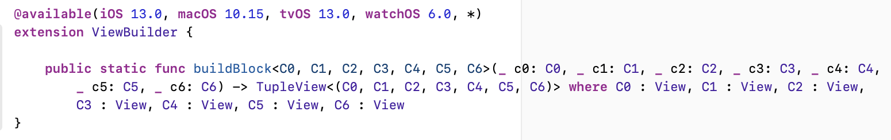
The other nine buildBlock(...) methods are the same except for the different number of views passed in.
➤ In EmbossedButton_Previews, change the Light Mode .buttonStyle(EmbossedButtonStyle()) to:
.buttonStyle(EmbossedButtonStyle(buttonShape: .round))
➤ Preview the button, and this is the result for Light Mode:
The circle takes its diameter from the height of the button.
➤ To visualize this, in shape(), click Circle() to view the circle outline in the preview:
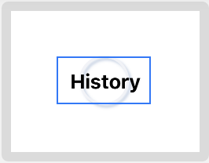
The size of the circle should be the larger of either the width or the height of the button contents. You’ve already used GeometryReader to find out the size of a view, and that’s what you’ll use here.
➤ In makeBody(configuration:), embed shape() in GeometryReader and add a size parameter to shape. This is the contents of background(_:):
.background(
GeometryReader { geometry in
shape(size: geometry.size)
.foregroundColor(Color("background"))
.shadow(color: shadow, radius: 1, x: 2, y: 2)
.shadow(color: highlight, radius: 1, x: -2, y: -2)
.offset(x: -1, y: -1)
})
➤ Change func shape() -> some View to:
func shape(size: CGSize) -> some View {
You’re now passing to shape(size:) the size of the contents of the button, so you can determine the larger of width or height.
➤ In shape(size:), add this modifier to Circle():
.frame(
width: max(size.width, size.height),
height: max(size.width, size.height))
Here you set the frame to the larger of the width or height.
➤ Preview the button, and you can see that the circle takes the correct diameter of the width of the button contents, but starts at the top.
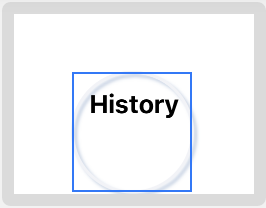
➤ Add this after the previous modifier:
.offset(x: -1)
.offset(y: -max(size.width, size.height) / 2 +
min(size.width, size.height) / 2)
You offset the circle in the x direction by half of the width of the stroke. In the y direction, you offset the circle by half the diameter plus the smaller of half the width or height.
Your embossed button is now complete and ready to use.
➤ Open WelcomeView.swift and add a new property:
var historyButton: some View {
Button(
action: {
showHistory = true
}, label: {
Text("History")
.fontWeight(.bold)
.padding([.leading, .trailing], 5)
})
.padding(.bottom, 10)
.buttonStyle(EmbossedButtonStyle())
}
Here you use the other form of Button so that you can format the button contents. You use the default capsule shape for the button style.
➤ In body, replace:
Button("History") {
showHistory.toggle()
}
.sheet(isPresented: $showHistory) {
HistoryView(showHistory: $showHistory)
}
.padding(.bottom)
with:
historyButton
.sheet(isPresented: $showHistory) {
HistoryView(showHistory: $showHistory)
}
➤ Copy the var historyButton code, open ExerciseView.swift and paste the code into ExerciseView.
➤ In body, replace:
Button("History") {
showHistory.toggle()
}
with:
historyButton
Notice as you replace body’s button code with properties describing the views, the code becomes a lot more readable.
➤ In RatingView.swift, in body, replace the contents of ForEach with the new round button:
Button(action: {
updateRating(index: index)
}, label: {
Image(systemName: "waveform.path.ecg")
.foregroundColor(
index > rating ? offColor : onColor)
.font(.body)
})
.buttonStyle(EmbossedButtonStyle(buttonShape: .round))
.onChange(of: ratings) { _ in
convertRating()
}
.onAppear {
convertRating()
}
You embed Image inside the new embossed button as the label and this time you use the round embossed style.
➤ Build and run and admire your new buttons:
ViewBuilder container view¶
Skills you’ll learn in this section: container views.
Looking at the design at the beginning of the chapter, the tab views have a purple/blue gradient background for the header and a gray background with round corners for the rest of the view.
You can make this gray background into a container view and embed WelcomeView and ExerciseView inside it. The container view will be a @ViewBuilder. It will take in any kind of view content as a parameter and add its own formatting to the view stack. This is how HStack and VStack work.
➤ Create a new SwiftUI View file named ContainerView.swift.
➤ Change struct ContainerView: View { to:
struct ContainerView<Content: View>: View {
var content: Content
Content is a generic. Generics make Swift very flexible and let you create methods that work on multiple types without compile errors. Here, Content takes on the type with which you initialize the view. You’ll learn more about generics in Chapter 15, “Structures, Classes & Protocols”.
➤ Create an initializer for ContainerView:
init(@ViewBuilder content: () -> Content) {
self.content = content()
}
You’ll recognize the argument of the initializer as a closure. It’s a closure that takes in no parameters and returns a generic value Content. In the initializer, you run the closure and place the result of the closure in ContainerView’s local storage.
You mark the closure method with the @ViewBuilder attribute, allowing it to return multiple child views of any type.
➤ Change body to:
var body: some View {
content
}
The view here is the result of the content closure that the initializer performed.
Now you can test out your container view in the preview.
➤ Change ContainerView_Previews to:
struct Container_Previews: PreviewProvider {
static var previews: some View {
ContainerView {
VStack {
RaisedButton(buttonText: "Hello World") {}
.padding(50)
Button("Tap me!") {}
.buttonStyle(EmbossedButtonStyle(buttonShape: .round))
}
}
.padding(50)
.previewLayout(.sizeThatFits)
}
}
You create a VStack of two buttons. You send ContainerView the VStack as the content closure parameter. ContainerView then shows the result of running the closure content.
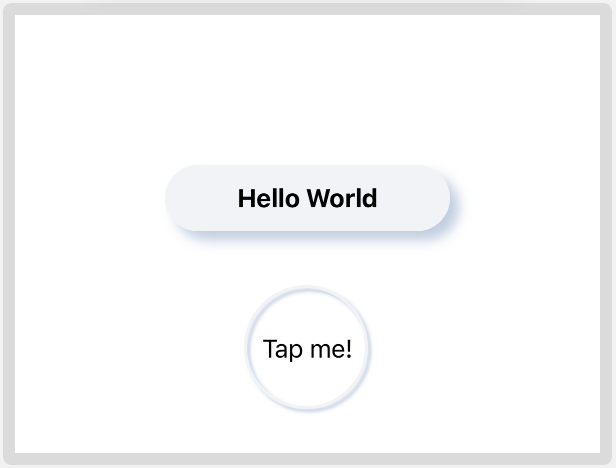
Obviously, this container view only returns the VStack, so it’s not a lot of use at the moment. You can make view builders quite complex though. In supporting code in Chapter 21, “Delightful UX — Final Touches”, you can find a RenderableView view builder that observes the contained views and takes a screenshot of the views when triggered.
Your view builder here will format the background.
➤ In ContainerView replace body with:
var body: some View {
ZStack {
RoundedRectangle(cornerRadius: 25.0)
.foregroundColor(Color("background"))
VStack {
Spacer()
Rectangle()
.frame(height: 25)
.foregroundColor(Color("background"))
}
content
}
}
Here you create a rounded rectangle using the background color from the asset catalog. You don’t want the bottom corners to be rounded, so you add a rectangle with sharp corners at the bottom to cover up the corners.
➤ Preview the view, and your container view is finished. It’s a good idea not to add unnecessary padding to the actual container view, as that reduces the flexibility. Here you have padding in the preview. When you use the container view shortly, you’ll make it go right to the edges.
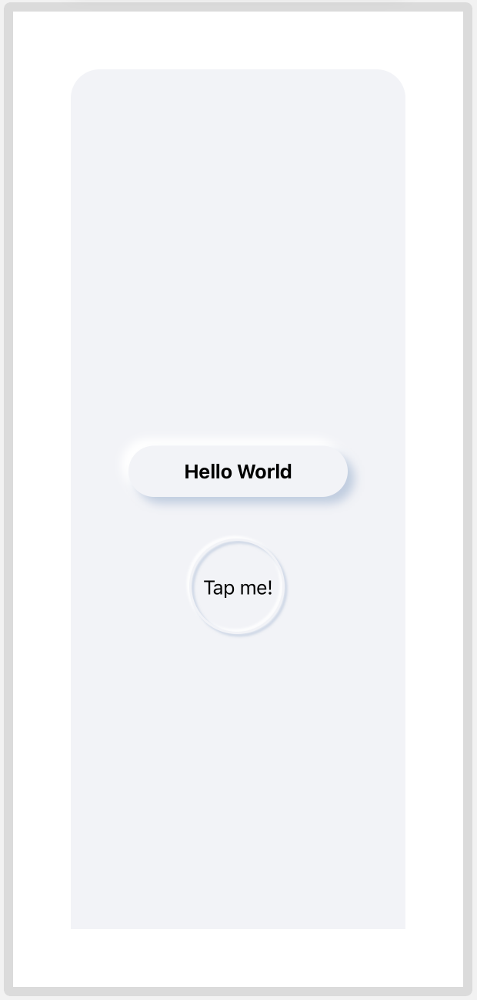
Designing WelcomeView¶
Skills you’ll learn in this section: refactoring with view properties; the safe area.
➤ Open WelcomeImages.swift. This is a file included in your starter project which contains some images and formatted text to use in WelcomeView.
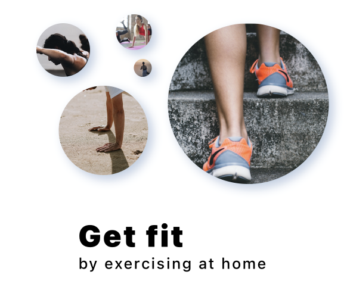
One interesting formatting tip to note in welcomeText is the text kerning in the modifier .kerning(2). This gives you control over the spacing between the letters.
➤ Open WelcomeView.swift and replace body with:
var body: some View {
GeometryReader { geometry in
VStack {
HeaderView(
selectedTab: $selectedTab,
titleText: "Welcome")
Spacer()
// container view
VStack {
WelcomeView.images
WelcomeView.welcomeText
getStartedButton
Spacer()
historyButton
}
}
.sheet(isPresented: $showHistory) {
HistoryView(showHistory: $showHistory)
}
}
}
Here you use the images and text from WelcomeImages.swift. Wherever you can refactor your code into smaller chunks, you should. This code is much clearer and easier to read. You embed the top VStack in GeometryReader so that you’ll be able to determine the size available for the container view.
➤ Embed the second VStack — the one containing the images and text — in your ContainerView and add the modifier to determine its height:
// container view
ContainerView {
VStack {
...
}
}
.frame(height: geometry.size.height * 0.8)
Using the size given by GeometryReader, the container view will take up 80% of the available space. You’ll take a further look at GeometryReader in Chapter 20, “Delightful UX - Layout”.
➤ Open ContentView.swift and preview your app on both iPhone 12 Pro Max and iPod Touch. These are the biggest and smallest screens (not taking into account iPad), and you want to make sure that your app looks great on all iPhones.
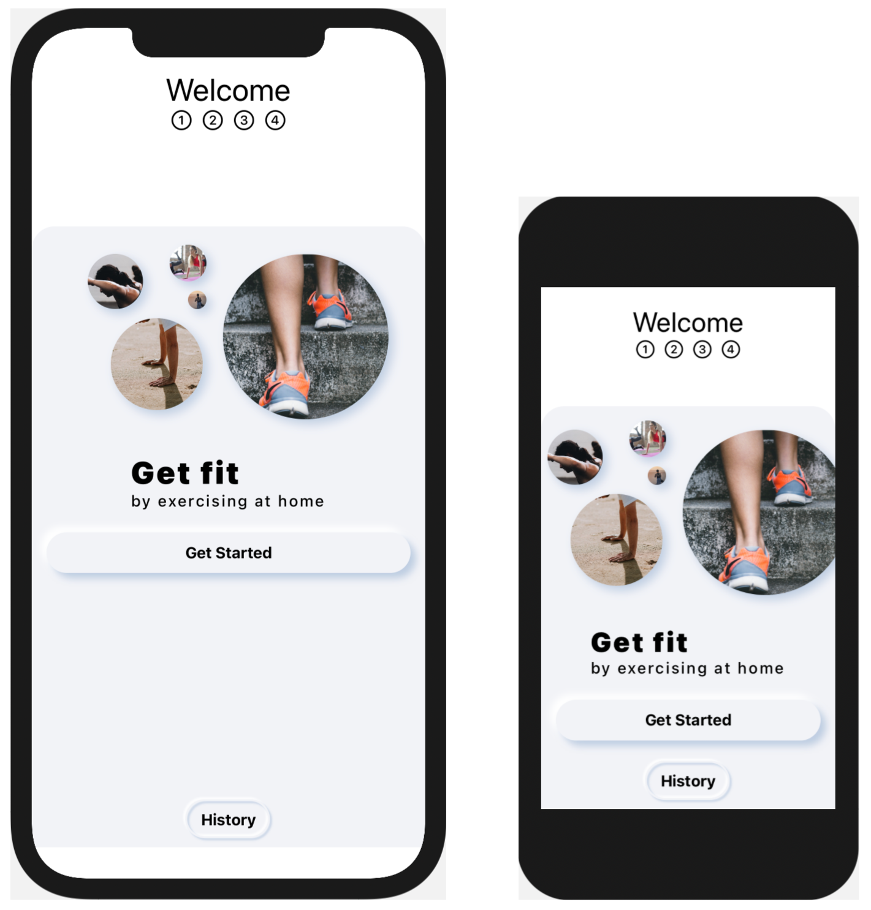
The safe area¶
On iPhone 12, there is a gap at the bottom for the safe area, and the gray background color does not extend to the bottom edge. Any iPhone without a physical home button has this safe area for the black bar at the bottom where you swipe up to leave the app.
When you’re layering background colors, it’s often safe to use the modifier edgesIgnoringSafeArea(_:). But if you use this modifier on your TabView here, this will be the result:
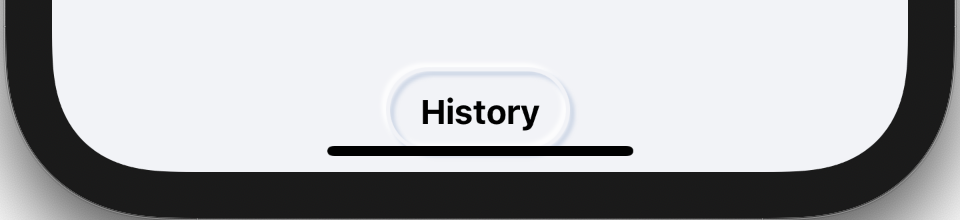
The History button will be too close to the bottom edge to swipe up. You could go to WelcomeView and pad the history button, but then the button will also be padded on iPod Touch which doesn’t need a safe area. There are several solutions. You could layer a Rectangle underneath TabView just as you did in ContainerView to cover up the hidden area and ignore the safe edge.
As you’re going to be adding a gradient background behind TabView, you can include the gray background color in the gradient and then ignore safe edges on the layered background color.
Gradients¶
Skills you’ll learn in this section: gradient views
SwiftUI makes using gradients really easy. You simply define the gradient colors in an array. You’re going to use a lovely purple to blue gradient, using the predefined colors in the asset catalog.
➤ Create a new SwiftUI View file called GradientBackground.swift.
➤ Change the preview to:
struct GradientBackground_Previews: PreviewProvider {
static var previews: some View {
GradientBackground()
.frame(width: 300, height: 300)
.previewLayout(.sizeThatFits)
}
}
You only need a small preview of the gradient.
➤ Add a new property to GradientBackground:
var gradient: Gradient {
Gradient(colors: [
Color("gradient-top"),
Color("gradient-bottom")
])
}
This defines the gradient colors.
➤ Change body to:
var body: some View {
LinearGradient(
gradient: gradient,
startPoint: .top,
endPoint: .bottom)
.edgesIgnoringSafeArea(.all)
}
You start the gradient at the top and continue down to the bottom. If you want the gradient to be diagonal, you can use .topLeading as the start point and .bottomTrailing as the end point. Because this gradient will only be used as a background color, you can ignore the safe area, and the gradient will stretch to all screen edges.
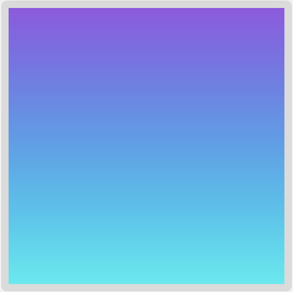
➤ You’re also going to cover up the safe area with gray, so include that in the list of colors:
Gradient(colors: [
Color("gradient-top"),
Color("gradient-bottom"),
Color("background")
])
This result gives a less pleasant purple to blue gradient.
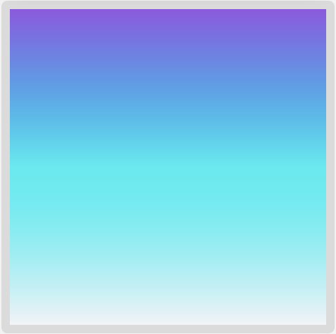
You can control where the gradient changes using stops.
➤ Replace gradient with:
var gradient: Gradient {
let color1 = Color("gradient-top")
let color2 = Color("gradient-bottom")
let background = Color("background")
return Gradient(
stops: [
Gradient.Stop(color: color1, location: 0),
Gradient.Stop(color: color2, location: 0.9),
Gradient.Stop(color: background, location: 0.9),
Gradient.Stop(color: background, location: 1)
])
}
Here you use purple to blue for 90% of the gradient. At the 90% mark, you switch to the background color for the rest of the gradient. As you have two stops right next to each other, you get a sharp line across instead of a gradient. If you want a striped background, you can achieve this using color stops in this way.
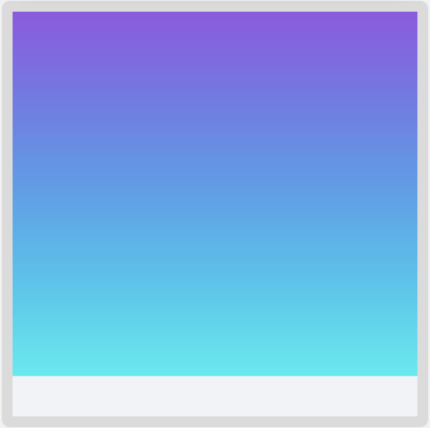
➤ Open ContentView.swift to add your gradient background.
➤ Embed TabView in a ZStack and add your background:
ZStack {
GradientBackground()
TabView(selection: $selectedTab) {
...
}
...
}
➤ Preview your result on several iPhone sizes. Also make sure that you check that your layout works as far as possible with accessibility dynamic type. With this layout, iPod Touch is still usable even set to Accessibility Large.
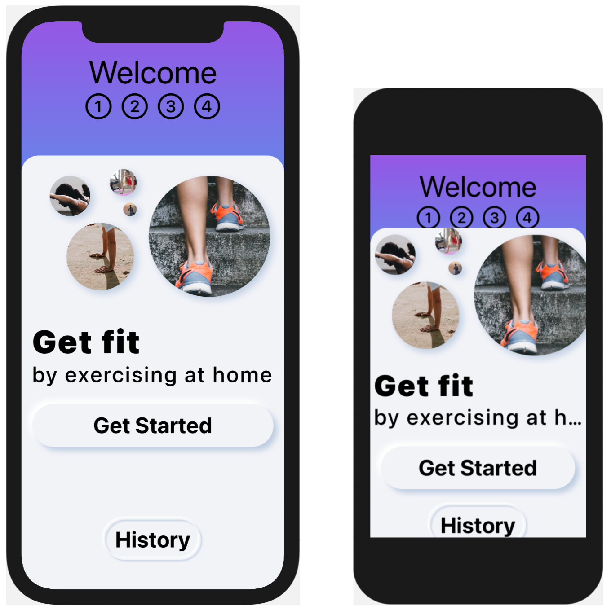
Challenge¶
Your challenge is to continue styling. First style HeaderView.
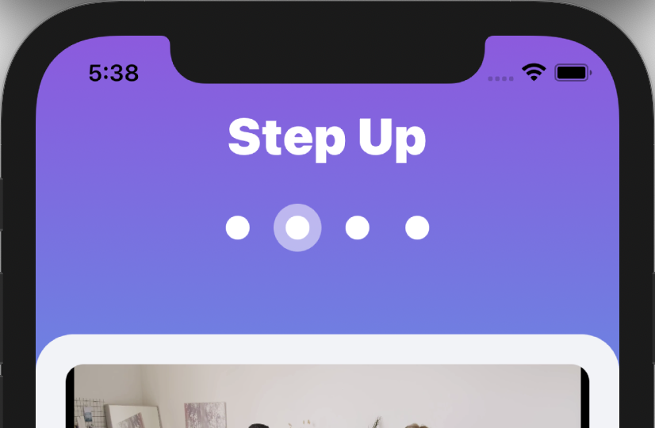
Functionality will remain the same, but instead of numbers, you’ll have circles. A faded circle behind the circle indicates the current page. You can achieve transparency with the modifier opacity(:), where opacity is between zero and one. You may need to build and run to see your changes in Simulator if they don’t show up in preview.
ExerciseView doesn’t look so hot with the gradient background, so embed this in ContainerView just as you did in WelcomeView.
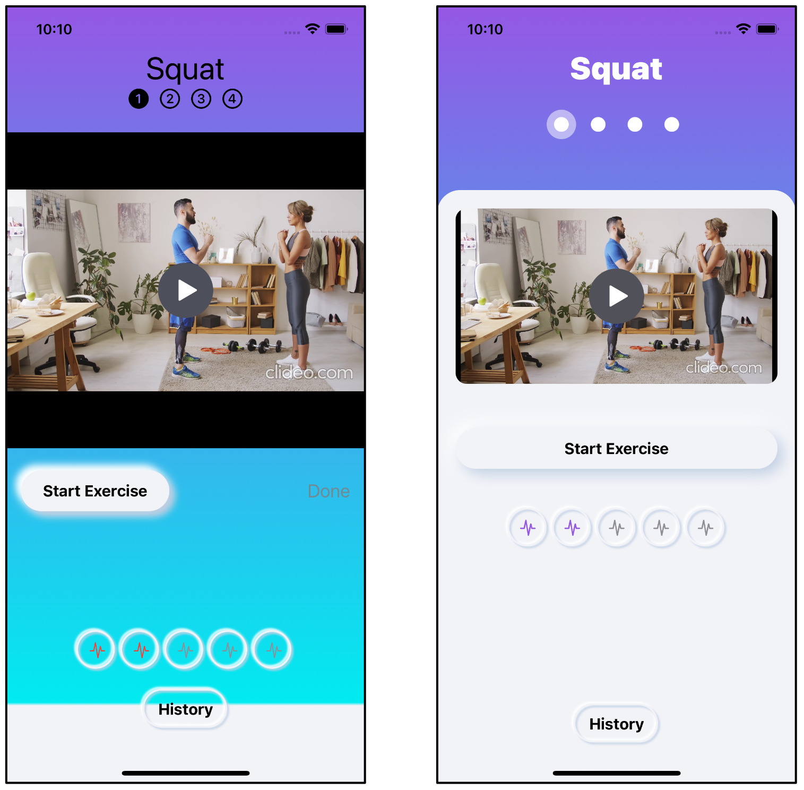
The project supplied in the challenge directory contains a fully designed app which makes full use of the buttons you styled in this chapter. Check out:
- The Get Started button which appears to indent when you tap it.
- The History views. There are two of them, one a list and one a bar chart. To make the history bar chart, there are some extension methods on
Date()to work out an array for the last seven days, as well as formatting day and month. - The Timer view, now a modal with a circular cut-out for the title.
Key points¶
- It’s not always possible to spend money on hiring a designer, but you should definitely spend time making your app as attractive and friendly as possible. Try various designs out and offer them to your testers for their opinions.
- Neumorphism is a simple style that works well. Keep up with designer trends at https://dribbble.com.
- Style protocols allow you to customize various view types to fit in with your desired design.
- Using
@ViewBuilder, you can return varying types of views from methods and properties. It’s easy to create custom container views that have added styling or functionality. - You can layer background colors in the safe area, but don’t place any of your user interface there.
- Gradients are an easy way to create a stand-out design. You can find interesting gradients at https://uigradients.com.